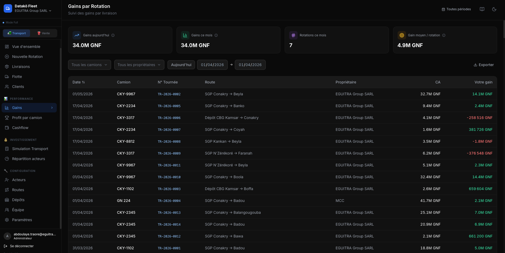

Gestion des rotations
Création de feuilles de route, suivi d'avancement, et mise à jour des statuts des expéditions de leur point de départ jusqu'à l'arrivée.
DataKö Fleet est une plateforme de pilotage conçue pour les entreprises de transport et logistique. Suivez vos rotations, maîtrisez vos coûts et prenez des décisions basées sur des données fiables, en temps réel.

Dans les marchés émergents et en forte croissance, gérer une flotte de véhicules est un défi constant. L'absence d'outils adaptés force les équipes à s'appuyer sur des communications fragmentées et des processus manuels qui dégradent la rentabilité.
Sans logiciel d'exécution centralisé, le contrôle échappe au management, les coûts cachés s'accumulent et chaque rotation devient une zone d'ombre.
Manque de visibilité sur l'exécution des rotations et des livraisons.
Marges commerciales et rentabilité par trajet difficiles à calculer.
Dépendance forte à des échanges WhatsApp personnels non structurés.
Suivi approximatif des coûts critiques (carburant, maintenance, primes).
Peu ou pas de centralisation des données pour analyser la performance globale.
DataKö Fleet remplace les feuilles de calcul éparpillées et les communications perdues par un socle unique de pilotage. Vous ne subissez plus l'opérationnel, vous le maîtrisez.
Création de feuilles de route, suivi d'avancement, et mise à jour des statuts des expéditions de leur point de départ jusqu'à l'arrivée.
Optimisez l’utilisation de votre flotte grâce à une gestion centralisée des camions sur chaque rotation.
Mise en relation automatique de la facturation client et des coûts d'exécution pour délivrer une marge nette instantanée par trajet.
Saisie et contrôle des dépenses opérationnelles critiques : consommations de carburant, frais de péages et avances chauffeurs.
Suivi de l'état du parc, remontée des avaries par les équipes terrain et planification des cycles d'entretiens préventifs.
Export propre et centralisation de toutes vos données financières pour faciliter la facturation et s'intégrer à votre système de gestion.
Même le meilleur logiciel du monde échoue si le terrain ne l’utilise pas. C'est pourquoi l'acquisition de données de Fleet repose sur l'outil le plus universel : WhatsApp.
Chaque rotation est tracée, mesurée et analysée en temps réel.

Identifiez immédiatement les surconsommations de carburant, les coûts de maintenance anormaux et les dépenses injustifiées de vos véhicules.
Ne pilotez plus à l'aveugle. Obtenez le coût de revient (PRI) et la marge locative de chaque rotation en croisant vos factures de transport à vos dépenses réelles.
Limitez drastiquement les opérations non tracées, le vol de matériel ou d'essence et les pertes de bordereaux par la digitalisation de la chaîne documentaire.
Passez de réactif à proactif. Remontées d'incidents, gestion des litiges, les managers peuvent prendre action dans la minute plutôt que d'attendre la fin de semaine.
Que vous démarriez votre structuration ou que vous pilotiez déjà une activité complexe, DataKö Fleet s’adapte à votre niveau de maturité opérationnelle.
Pour les entreprises qui veulent gagner en visibilité sur leurs opérations, leurs revenus et leurs pertes, sans changer immédiatement leur façon de travailler.
Pour les opérateurs qui veulent structurer leurs opérations, centraliser la gestion de leur flotte et piloter leur rentabilité de manière active.
Module Vente disponible en option pour les entreprises mixtes (transport + vente)
Pour les entreprises qui veulent passer à l’échelle avec des workflows terrain, de l’automatisation et une gestion avancée de leurs opérations.
Avant Datakö, on naviguait à vue. Aujourd’hui, on voit la rentabilité de chaque rotation instantanément.
Nos chauffeurs l'ont adopté en 2 jours. Plus besoin de récupérer les bordereaux physiques, tout est sur WhatsApp.
La détection des consommations anormales de carburant nous a fait économiser des milliers d'euros dès le premier mois.
Non. Vos chauffeurs ne téléchargent aucune nouvelle application. L'interaction se fait directement dans WhatsApp avec des menus simples.
Le déploiement technique prend quelques jours. Une fois votre configuration (flotte, tarifs) importée, la plateforme est prête pour le terrain.
Absolument. Dès qu'un chauffeur valide une étape ou une dépense, votre cockpit d'administration se met à jour de façon instantanée.
Oui. Datakö Fleet est agnostique. Il n'est pas nécessaire d'installer des capteurs lourds ou de renouveler vos véhicules.
Choisissez votre niveau et évoluez à votre rythme.